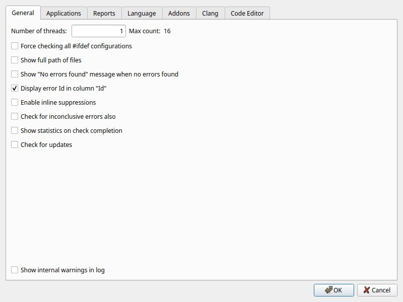
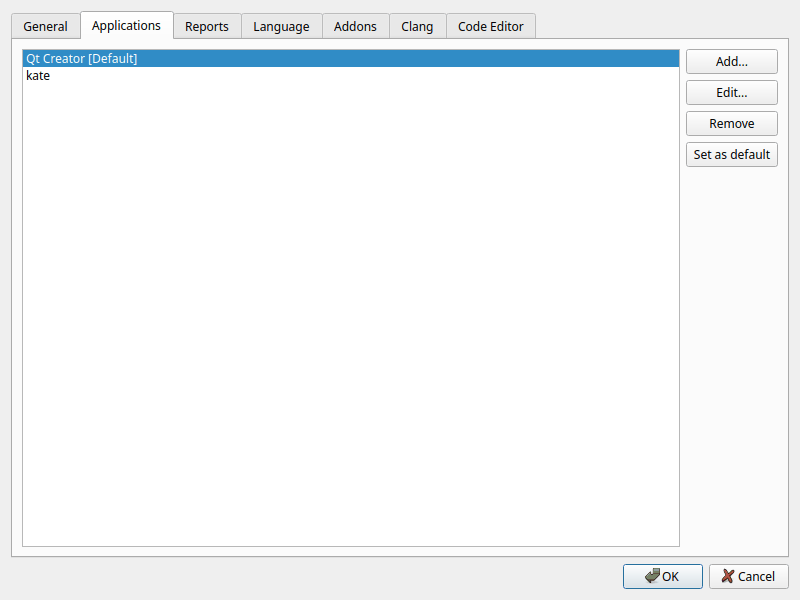
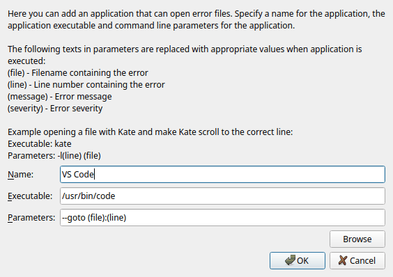
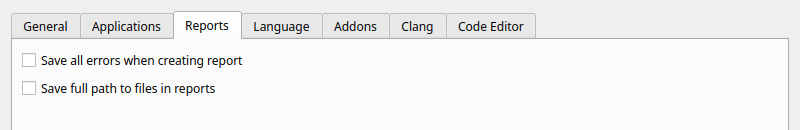
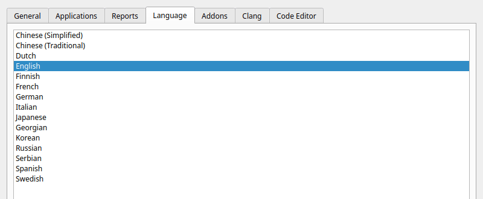
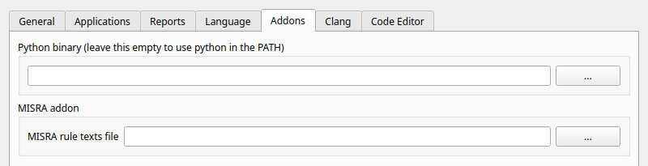
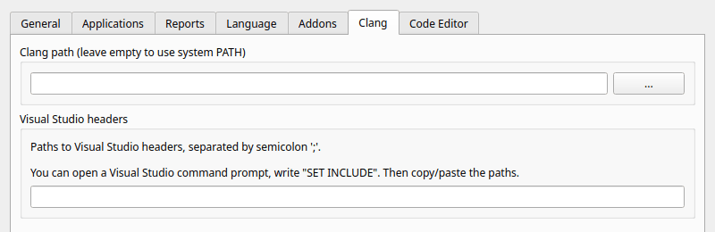
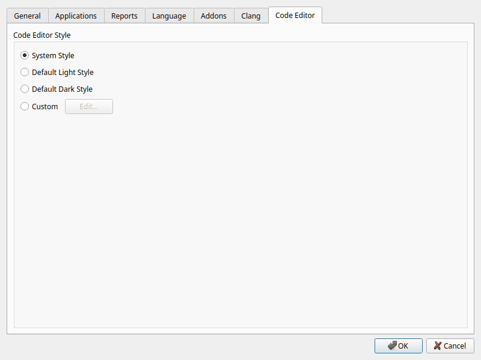

Open the preferences with Edit > Preferences or the preferences button in the toolbar. The preferences are your personal settings; they are stored for your user account, not in the project file. Click OK to apply the changes.
Some settings exist both here and in the project file, for example Enable inline suppressions. When a project is open, the project setting is used.

| Option | Description |
|---|---|
| Number of threads | How many files are analyzed at the same time. Each thread analyzes its own file. Max count shows the number of processor cores of your computer, which is the highest value you can enter. More threads make the analysis faster, but use more memory. A value equal to the number of cores is usually a good choice. |
| Force checking all #ifdef configurations | By default Cppcheck
analyzes at most 12 preprocessor configurations of each file. With this
option all configurations are analyzed. This finds more bugs in code with
many #ifdefs, but can be very slow. See
Defines. |
| Show full path of files | Show the full path of files in the results list, instead of the path relative to the project. |
| Show "No errors found" message when no errors found | Show a message box when an analysis finishes without warnings. |
| Display error Id in column "Id" | Show the Id column in the results list. The id is needed for suppressions. |
| Enable inline suppressions | Allow comments like
// cppcheck-suppress nullPointer in the code to suppress
warnings. Only used when no project is open; projects have their own
setting. See Inline
suppressions. |
| Check for inconclusive errors also | Also report warnings where Cppcheck is not sure that there is a problem. These give more findings, but also more false warnings. An Inconclusive column is added to the results list. |
| Show statistics on check completion | Open the statistics dialog when an analysis finishes. |
| Check for updates | When the GUI starts, check on the Cppcheck web site if there is a newer version. If there is, a message is shown at the top of the main window. This needs an internet connection; nothing else is sent. |
| Show internal warnings in log | Show debug warnings from the analysis in the Analysis Log. Only useful if you develop Cppcheck or investigate a problem with the analysis. |

The editors (or other programs) that you can open a warning in. They are shown at the top of the context menu of the results list. The default application is used when you double-click a warning or press Enter.
On some systems the GUI finds installed editors automatically and adds them to the list.

For each application you enter a name for the menu, the executable and the command line parameters. These texts in the parameters are replaced when the application is started:
| Text | Replaced with |
|---|---|
(file) | The file name of the warning |
(line) | The line number |
(message) | The warning message |
(severity) | The severity |
Examples for some common editors:
| Editor | Executable | Parameters |
|---|---|---|
| Visual Studio Code | code |
--goto (file):(line) |
| Kate | kate |
-l(line) (file) |
| Qt Creator | qtcreator |
-client (file):(line) |
| Notepad++ | notepad++.exe |
-n(line) (file) |
| Vim (in a terminal) | xterm |
-e vim +(line) (file) |
| Emacs | emacs |
+(line) (file) |

| Option | Description |
|---|---|
| Save all errors when creating report | Also save hidden warnings when you save the results to a file. By default only the visible warnings are saved. |
| Save full path to files in reports | Save the full path of each file. By default the path relative to the project (or the root path) is saved. |
See Results files, printing and statistics.

The language of the user interface. The GUI is translated to several languages; select one and click OK. This help is only available in English.

| Option | Description |
|---|---|
| Python binary | The Python interpreter used to run addons. Leave it empty to use the Python found in the PATH. If the file you enter does not exist, a red warning is shown. |
| MISRA rule texts file | A text file with the MISRA C rule texts, used by the Misra addon to show the rule texts in the warnings. Cppcheck is not allowed to distribute the rule texts, so you must create the file from your copy of the MISRA C document. See Addons for the format. This is the same setting as MISRA rule texts in the project dialog. |

| Option | Description |
|---|---|
| Clang path | The folder where clang and
clang-tidy are installed. Used by the Clang parser and by
Clang-Tidy (see Analysis and
External tools in the project
dialog). Leave it empty to search the system PATH. On Windows, Clang is
also found in C:\Program Files\LLVM\bin. |
| Visual Studio headers | Paths to the Visual Studio headers,
separated by semicolons. Clang needs them to parse code that uses the
Visual Studio libraries. To get the paths, open a Visual Studio command
prompt, type SET INCLUDE and copy/paste the paths. |

The colors of the code view in the lower part of the main window.